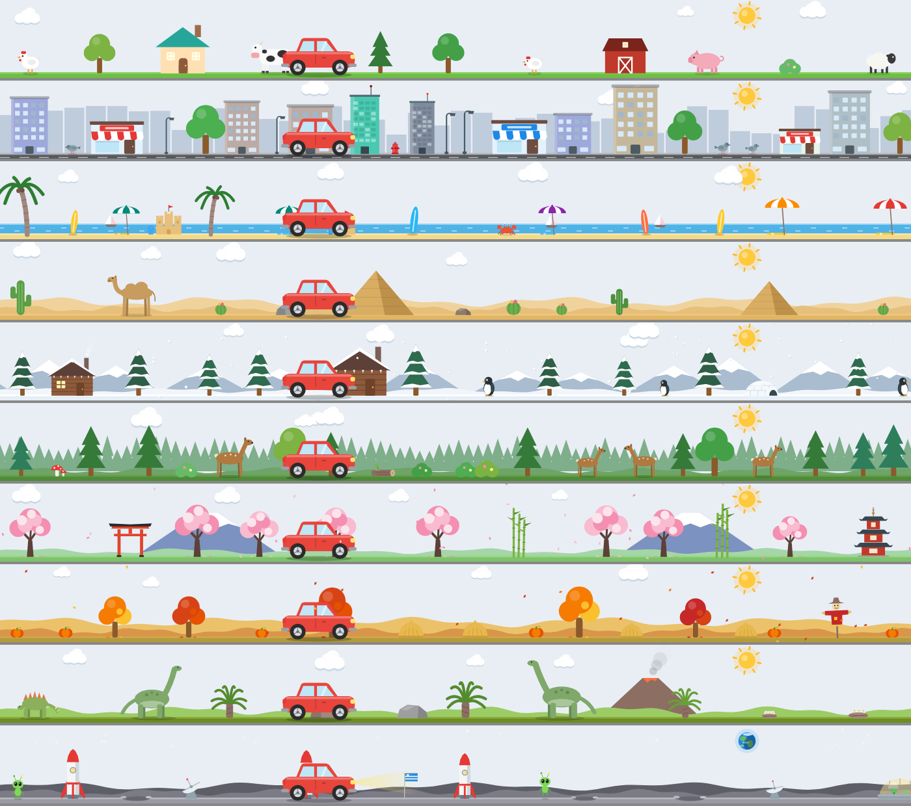

Pinned and running apps on every screen. Tap ⌘ once to open a Start menu with search. Add a little car that drives along the top of your taskbar, if you like. 每個螢幕底部都有一條工作列，放釘選和執行中的 App。單按一下 ⌘ 就能打開有搜尋功能的開始選單。想要的話，還可以讓一台小車在工作列上面開來開去。
If you move between Windows and macOS, you won't have to relearn how to switch apps. Everything below is free.常在 Windows 和 macOS 之間切換的人，不用再重新習慣怎麼切 App。以下功能全部免費。
Only a lone tap of ⌘ opens it. ⌘C, ⌘Tab and ⌘-click still work normally. You can choose left, right, or either key.只有單獨按一下 ⌘ 再放開才會觸發，⌘C、⌘Tab、⌘+點擊都不受影響。可以選左、右或兩邊都行。
Start typing to search and press Enter to open the first result. It also has pinned apps, all apps, common folders, and power options.直接打字搜尋，Enter 開啟第一個結果。還有已釘選、所有應用程式、常用資料夾和電源選項。
Middle-click a window button to close it. Right-click an app for its window list, to bring back minimized windows, or to pin, quit or force quit.中鍵點視窗按鈕可以關掉視窗。右鍵可以看視窗列表、叫回縮到最小的視窗，或是釘選、結束、強制結束。
Battery with percentage, a volume slider, a clock with seconds and date, and a thin Show Desktop button at the far right.電量（可顯示百分比）、音量滑桿、可顯示秒數和日期的時鐘，最右邊還有細細的「顯示桌面」按鈕。
Each screen gets its own taskbar. You can center the icons in the Windows 11 style.每個螢幕各自一條工作列，圖示可以像 Windows 11 那樣置中。
It follows your system language by default. You can also export your whole setup as a file and share it.預設跟隨系統語言。整套設定也能匯出成檔案分享給別人。
A little car drives among trees, houses and animals just above the taskbar. Clicks pass straight through it, so it never gets in your way.一台小車在工作列上方的樹、房子和動物之間開來開去。滑鼠點擊會直接穿透，不會擋到你。

Every new install includes a 7-day Pro trial, so you can try the scenes before you buy.新安裝都有 7 天 Pro 免費試用，買之前可以先玩玩看場景。
Drag Taskbar for Mac into your Applications folder, then open it.把 Taskbar for Mac 拖進「應用程式」資料夾，然後打開。
The welcome screen walks you through it. This permission is how the app lists and switches windows.歡迎畫面會一步步帶你設定。App 需要這個權限才能列出和切換視窗。
This is only needed for the tap-⌘ shortcut, and it takes effect within about 2 seconds.只有「單按 ⌘」需要這個權限，打開後約 2 秒內就會生效。
Set the Dock to auto-hide or move it to the side. The welcome screen can do this for you.把 Dock 設成自動隱藏或移到旁邊，歡迎畫面可以幫你一鍵設定。
No. It runs alongside the Dock. Most people set the Dock to auto-hide so the two don't overlap.不會，它跟 Dock 並存。大部分人會把 Dock 設成自動隱藏，避免兩者重疊。
Accessibility lets it see, switch and close app windows. Input Monitoring lets it notice a lone ⌘ tap. Nothing you type is recorded or sent anywhere.輔助使用讓它能看到、切換和關閉 App 視窗；輸入監控讓它能偵測單按 ⌘。你打的字不會被記錄，也不會傳到任何地方。
macOS has no public way to reserve space at the bottom of the screen, so a maximized window can still overlap the taskbar slightly.macOS 沒有公開的 API 能保留螢幕底部空間，所以最大化的視窗還是可能蓋到工作列一點點。
After you buy, you'll receive a license key by email. Paste it into Settings → License & Purchase. One key works on up to 3 Macs, and you can deactivate a Mac to move the key to another one.購買後會收到一封附授權碼的 email，貼到「設定 → 授權與購買」就好。一組授權碼最多 3 台 Mac，可以停用某台再換到別台。
Yes. The app is signed with a Developer ID and notarized by Apple, so macOS opens it without any warnings.可以。App 用 Developer ID 簽署並通過 Apple 公證，macOS 打開時不會跳出警告。